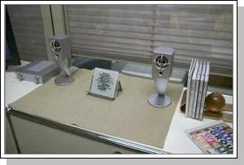
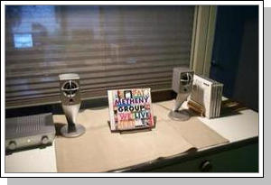
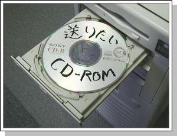
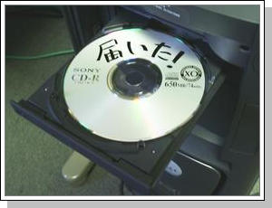

現在使われている機器について考えてみると、 電話やテレビはだいたい誰でも使えているし、 FAXやオーディオ機器もそれほど問題にはなっていない。 目覚まし時計の設定もまず大丈夫である。 一方、 ビデオ録画をいつも間違いなく設定できる人は珍しいし、 計算機で複雑な操作を行なうことができる人はかなり少数である。 どちらかというと計算機に近いような情報家電機器を 誰でも使うことはできるのであろうか。
難しいという点では同じでも、 計算機のように本質的に複雑なものをを使いこなす難しさと ビデオ予約の難しさは質が異なるように思われる。 計算機を使いこなすためには、 キーボード操作のように長年の精進が必要な部分があるし、 プログラミングのように抽象的な思考が要求される場合があるが、 ビデオ予約の場合はそのようなものは必要なく、 単に情報を検索したり条件を指定したりできればすむからである。 ビデオ予約が難しいのは、単に現在の装置の設計が悪いからであり、 本質的に難しい問題ではなさそうに思える。 プログラムを作ったり良い文章を書いたりすることは 誰にでもできるわけではないが、 単純にデータをコピーしたり印刷したりする操作は誰でもできるはずで、 これらを一緒にすることは正しくないであろう。
操作が非常に単純だが便利な自動ドアについて考えてみると、
と決まっており、 これ以外の操作や反応はほとんど考えられないから、 ユーザはほぼ絶対に使い方を間違うことはありえない。 金槌を持つと何でも釘に見えると言うが、 それでも困らないようなシステムならばよいわけである。
やりたいこと = ビルに入ること できること = ビルに近付くこと 機械の動作 = ドアが開く
一方、 具体的に目に見えるものは扱いが楽である。 目の前のビデオからテレビに線がつながっていれば、 ビデオからテレビに信号が流れるだろうことが一目でわかるし、 目覚まし時計の短針が時間とともに回転して 設定時刻を示す針に重なるだろうということは誰でも想像することができる。 このように、 具体的に目に見えるものの関係はわかりやすいので、 主に記号や名前を使うテキストベースのプログラミング言語のかわりに、 より具体的なものを使ってプログラムを作ることができるビジュアルプログラミングシステムが 音楽などの世界でよく使われている。 記号を多用するプログラミング言語に比べ、 ビジュアルプログラミング言語では 情報の流れや因果関係を図としてわかりやすく表現することができるので、 抽象的指向を行なう頭脳リソースが足りない人でも なんとか活用することができる。
つまり、頭脳リソースが足りない人でも情報家電を使えるようにするためには 操作方法が強く限定された具体的な物だけを使うようにすればよいと考えられる。
テレビやプロジェクタを使うときに必要な操作は、 誰かが作った番組や映画の情報を テレビモニタやスクリーンに送るというだけの操作であるし、 音楽を聴くために必要な操作は、 CDやネットワーク上の音楽情報をスピーカまで転送する 操作ということになる。 また、ビデオ録画という操作は、 情報の転送に若干条件を付加するという作業になる。 このように、 情報家電機器の操作の基本は 情報の流れを制御することであると考えると、 複雑に思える情報家電操作も わかりやすい簡単なものとすることができるはずである。
音楽を聴く場合であれば、 どの音楽ソースをどの出力装置に転送するかだけを指定することさえ できればよいわけであるし、映像情報でも同じである。 どういう情報を/どういう条件で/どこに転送するか/ を柔軟に指定することさえできれば、 ハードウェアやネットワーク環境がどれほど複雑になっても ユーザにとって簡単に使うことができるはずである。
実世界の事物と計算機内の情報とを融合させることにより 計算機をより直感的に使おうとする 実世界指向インタフェースの考え方が近年かなり浸透してきている。 従来の計算機では、 あらゆる情報は計算機の内部のみに存在し、 それを外部から手探り的に操作するという使い方が普通であったが、 実世界指向インタフェースシステムでは 計算機の中身と実世界の事物を融合することにより、 計算機のより直感的な使い方が可能になっている。 情報家電製品に対しても実世界指向インタフェースの考え方を応用することにより 情報の流れを直感的に制御することができるようになる。
一方、オーディオ製品や情報機器は、 目的とする動作がドアの開閉と同じぐらい単純な場合であっても、 それを実行するための操作がはるかに複雑になっている場合が多い。 たとえば台所でCDを聴きたい場合、 アンプやCDプレーヤが居間に置いてあるとすると、 居間のCDプレーヤを操作しなければ台所でCDを聴くことはできない。 リモコンを使うこともできるが、 その場合でもリモコンを居間のプレーヤに向ける必要がありので 直感的でないことに変わりはない。 音楽サーバが屋根裏にあれば天井にリモコンを向けるのであろうか。 音楽のソースを表現するCDもスピーカも台所にあるのであれば、 それらだけを使って音楽を聴くことができてあたりまえのはずなのに、 現在の機器ではこのようなことができないようになっている。 ドアの前に立ってもドアが開かず、 別の場所にある装置を使ったり 別の場所にリモコンを向けて操作したりしなければならない ようなものだといえるであろう。
台所でCDを簡単に聴きたいという問題は、 スピーカのところにCDを置くだけ でその曲を聴くことができるようなシステムを作ることにより解決できる。 一見複雑と思われるような仕事でも、 このように置くだけで解決できるようなものが沢山ある。 何かを置いたら何かが起こるというのはかなり直感的であり、 間違えることが少ないと考えられるため、 情報家電の制御方式としては向いていると思われる。
ものを置くだけで必要な処理が自動的に実行される 実世界指向インタフェースシステムはいくつも提案されている。 マクギル大学のJeremy Cooperstockは、 ビデオテープや書類を置くだけで会議室のAV機器が正しく設定される 「Reactive Room」というシステムの実験を行なっていた[1]。 Reactive Roomには、 普通の会議室と同様にビデオやプロジェクトや書画カメラが置いてあるが、 ユーザがそれらの接続などの設定を行なわなくても、 書画カメラのところに書類を置けば 自動的にその出力がプロジェクタに接続されて投影されたり、 ビデオをデッキに挿入すると自動的に ビデオの出力がプロジェクタに接続されたり、 必要なものをそこに置くだけで必要な操作を実行することができる。
Reactive Roomのような考え方を用いることにより、 いろいろなものを置くだけで情報家電機器を制御することができる。 例えば以下のようなシステムが考えられる。
音の出る位置に音楽のソースを置くことにより音楽を聴くことが できれば、どこでも直感的に音楽を聴くことができる。
ふだんはテレビでDVDを見ている環境でも、 プロジェクタ用のスクリーンをセットすれば DVDの出力が自動的にプロジェクタに切り換わって プロジェクタの電源が入るようになっていれば便利である。
最近は、
ハードディスクやDVD-RAMなどを使って
「追っかけ再生」が可能になっているビデオレコーダ製品が
各社から販売されている。
これらのシステムでは、
ビデオ信号をリアルタイムに記録媒体に記録することにより、
一時的に表示を停止して後で再生を再開することが
できるようになっているので、
番組放送途中にトイレに行きたくなった場合などに非常に便利である。
このようなシステムで表示を一時停止させたい場合、
通常はリモコンなどで停止操作を行なう必要があるが、
リモコンに連動したスイッチを座布団の下に設置して、
人が座布団に座っているときは普通に再生を行ない
座布団から立ち上がったら自動的に表示が停止するようにしておけば、
リモコンなどを使わなくても自動的に
追っかけ再生を行なわせることができる。
デジカメで撮った写真などを人に送ろうとするとき、 ファイルをまとめたり転送したりする手間は結構面倒なものである。 データを置くと自動的に相手先にデータが転送されるような データ転送システムを用意しておけば、 計算機に詳しくない人間でも簡単にデータのやりとりが できるので便利である。 また、近年安価に入手できるプリンタ/スキャナ複合機を使えば、 コピーと同じ手間で誰にでも情報を送ることができる。 何も置かずににコピーボタンを押すと通常のコピー操作を行ない、 知人の写真を置いて送信先を指定してコピーボタンを押すと、 FAXのように知人の複合機に印刷を行なう。
|  |  |
| CDが置かれていない状態 | CDを置くと電灯がついて音が聞こえる |
CDの中身はあらかじめMP3化して音楽サーバに格納してある。 CDケースにはRFIDタグが隠してあり、 スタンドの下に隠してあるリーダでそのIDを読みとることが できるようになっている。 IDとMP3ファイルの関係はあらかじめ登録してあるので、 IDを認識した時点でMP3ファイルを再生することにより 「置くだけ再生」が実現できたことになる。 PlayStandはこのように非常に単純な原理のシステムであるが、 わかりやすさは満点である。 台の上にはスピーカとCDとスタンドしかないので、 ユーザの実行できる操作はCDをスタンドに置くことぐらいであり、 スタンドに置けば音が鳴るというのは単純明解である。 原理的には台所でも風呂場でもトイレでも同じように使えるので、 自宅でぜひ使いたいという感想をもらうことが多かった。
現在のPlaystandは、 アンテナで読み取ったIDをシリアルに変換してPCに送出するモジュールと Linuxで実装している。 「置くだけ」演奏システムのために パソコンとRFIDリーダを使っていることになるが、 使いやすさを考えると将来はこの程度の富豪的な投資は充分正当化されるだろう。
|  | 転送 |
 |
|---|---|---|
| 転送元トレイ | 転送先トレイ |
CD Faxは、 データの入ったCDを送信トレイに挿すことにより、 CDが転送されて転送先の受信トレイから出現するシステムである。 もちろん本当にCDが転送されるわけではなく、 データだけが転送されて転送先のCD-Rで焼かれて トレイからイジェクトされるだけであるが、 うまく作れば本当にCDが転送されているように見せることができると思われる。 FAXを送る程度の簡便さでCDの中身を送ることができるし、 「転送トレイに挿せばデータが相手に送られる」というのは かなり理解しやすいと思われる。
筆者は時々田舎の両親から写真を送れと言われるが、 デジカメ写真を印刷して送るのは面倒だし、 CD-Rなどに焼いて送るのもやっぱり面倒である。 自分の家と両親の家の両方にCD Faxを設置しておけば、 写真の入っているCDやメモリカードを挿入するだけで 相手の家のCD FaxからCDが出現するので、 写真でもビデオでも気軽に送ることができそうな気がする。 友人や家族でCD便りをやりとりするのも一興だろう。
現在のCD Faxは独自のプロトコルを用いてdRubyで実装されているが、 RFC2305で規定される インターネットFAXプロトコルのような 標準的なプロトコルを用いることもできるだろう。